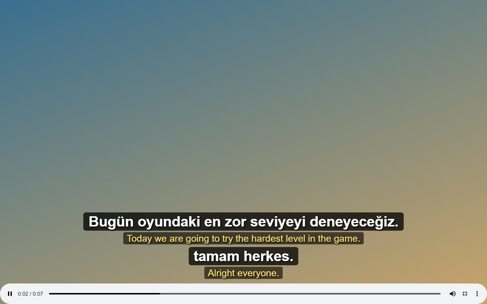

شاهد أي فيديو بلغتك
يضيف Babil نصًا فوريًا إلى الفيديوهات على YouTube وTwitch وKick وغيرها، مترجمًا إلى 26 لغة. كل شيء يعمل على جهازك.
مجاني. بلا حساب. بلا مفتاح API. الصوت لا يغادر جهازك أبدًا.

ماذا يفعل
نص يواكب الفيديو لحظة بلحظة
26 لغة
اختر اللغة التي تريدها، وسيترجم Babil الكلام في الفيديو أثناء تشغيله.
الأصل والترجمة معًا
شاهد السطرين في آنٍ واحد، حتى في وضع ملء الشاشة. مفيد جدًا حين تتعلّم لغة جديدة.
النص كما تحبه
اسحبه إلى أي مكان، وغيّر الخط والحجم والألوان حتى يريحك.
مجاني ومحلي
بلا اشتراك ولا حساب ولا مفتاح API. التعرّف على الكلام يتم عبر Whisper، ويعمل داخل متصفحك.
استمع إلى الترجمة
فعّل القراءة بصوت عالٍ (Read aloud) وسيقرأ Babil كل جملة مترجمة، ويخفض صوت الفيديو أثناء القراءة. اختر صوتًا (Iris أو Ruby أو Owen أو Miles أو Grace أو Skye) واضغط «استماع» (Listen) لتسمعه أولًا. تُستخدم الأصوات الموجودة على جهازك أولًا، فلا يمر نصك عبر أي صوت على الإنترنت ما دام هناك صوت محلي. مفيد حين تُتعبك قراءة النص.
في كل فيديو لغة لا تتحدثها بعد. يسدّ Babil هذه الفجوة وأنت تشاهد، دون أن يرسل ثانية واحدة من الصوت إلى أي مكان.
التثبيت
جاهز في دقيقتين تقريبًا
- أضِفه من سوق Chrome الإلكترونيافتح صفحة Babil في سوق Chrome الإلكتروني وانقر على «إضافة إلى Chrome».
- ثبّت Babil في شريط الأدواتافتح قائمة الإضافات (رمز قطعة الأحجية) وثبّت Babil ليبقى رمزه في متناول يدك دائمًا.
- شغّل النص الفوريشغّل فيديو، واختر لغتك، ثم اضغط الزر الكبير أو Alt+Shift+T. في أول تشغيل يُنزَّل نموذج للتعرّف على الكلام بحجم 600 ميغابايت تقريبًا، ويبقى محفوظًا بعد ذلك.
الخصوصية
صوتك يبقى على جهازك
التعرّف على الكلام والترجمة يعملان محليًا، فلا يُرفع أي شيء تشاهده لمعالجته. لا حساب عليك إنشاؤه، ولا خادم لنا في المنتصف. الشيفرة مرخّصة بترخيص MIT ومتاحة للجميع على GitHub، فيمكنك التحقق منها بنفسك.
الأسئلة الشائعة
أسئلة يطرحها الناس
هل Babil مجاني فعلًا؟
نعم. لا توجد باقة مدفوعة ولا فترة تجريبية ولا مفتاح API عليك شراؤه.
على أي مواقع يعمل؟
على YouTube وTwitch وKick وغيرها من المواقع التي تستخدم مشغّل فيديو قياسيًا. في Firefox لا يمكن التقاط الوسائط المحمية ولا المشغّلات التي لا تتيح مسارًا صوتيًا.
لماذا يكون التشغيل الأول بطيئًا؟
ينزّل Babil نموذج Whisper للتعرّف على الكلام مرة واحدة، وحجمه نحو 600 ميغابايت في الوضع التلقائي (Automatic). وفي المرات التالية يستخدم النسخة المحفوظة.
كيف أحصل على دقة أعلى؟
اختر لغة الكلام في الفيديو بنفسك بدلًا من تركها على الاكتشاف التلقائي (Detect automatically).
كيف أحدّثه؟
النسخ المثبّتة من سوق Chrome الإلكتروني أو من إضافات Firefox تتحدّث تلقائيًا عبر متصفحك عند نشر إصدار جديد هناك. أما التثبيت من ملف ZIP والتثبيت المؤقت فيتطلبان استبدال الملفات ثم إعادة تحميل الإضافة من صفحة الإضافات في المتصفح. تبقى الإعدادات والنماذج كما هي.
المزيد من menzo